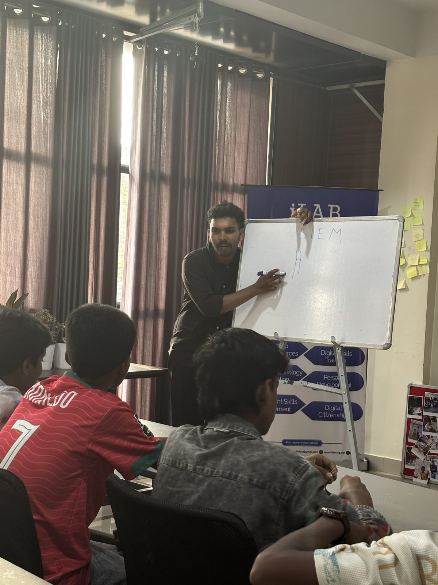
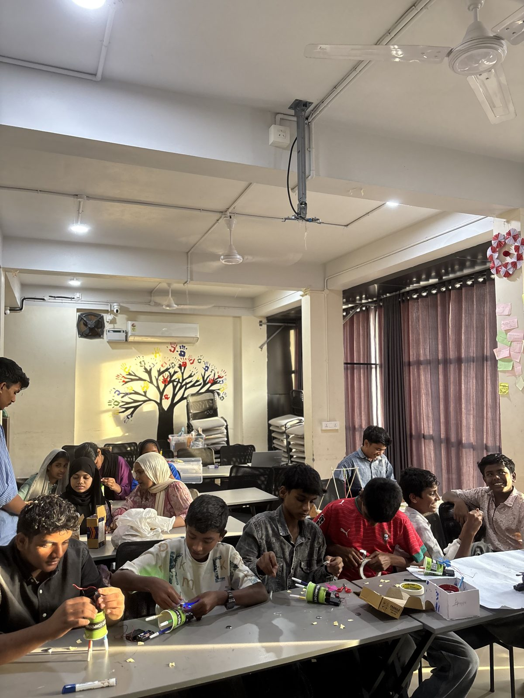
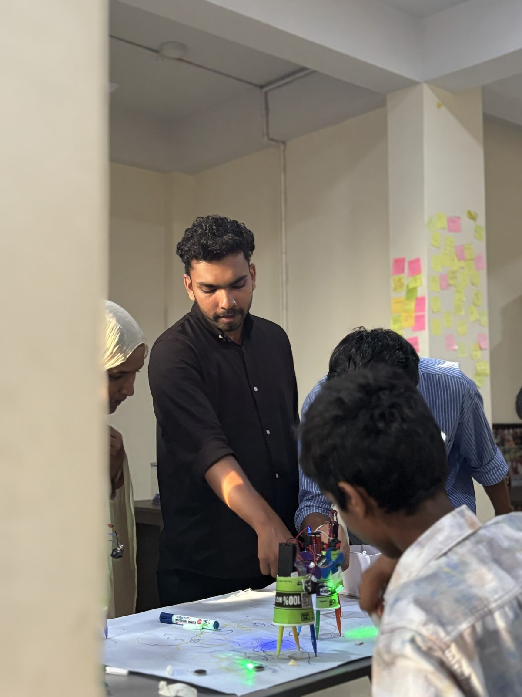

Overview
These sessions introduced basic electronics through making, not lectures alone. Students at Learning Hub worked with real parts: a coin cell, an LED, then a motor and a battery. Each step was something they could hold, connect, and test.
The series ended with a Scribble Bot — a small motor on a cup, markers for legs, and a battery to make it move. An offset weight on the motor makes the bot shake and drag the markers, so the drawing is the proof that the circuit works.
Topics
Closed circuits with a coin cell and LED
Polarity: why an LED only lights one way
Motors, batteries, and simple connections
Vibration and motion in a Scribble Bot
Activities
Lit an LED from a coin cell by closing the circuit
Tried motor direction and battery connections
Built a Scribble Bot from a cup, motor, and markers
Set the bots loose on paper and compared the drawings
Photos



Highlights
- 97 students across 7 hands-on sessions.
- Electronics introduced with a coin cell and an LED before any motor work.
- Every student built a Scribble Bot and watched it draw.
- The idea stayed the same throughout: learn the concept by making it work.